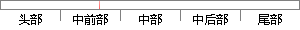

随着可移动智能设备的普及，尤其是智能手机更是走到了每个人的生活中。
片段位置图

相似结果|
相似片段 1：的教学效果；在医学这样的实践医学中，更是取得了瞩目的成绩 [4-5]。近几年，随着智能移动设备广泛普及，例如智能手机、平板电脑等为移动学习提供了基础 [6-7]。同时，互联网技术的普及，尤其是近些年移动网络
|
※ 片段修改建议 ※
近似词参考：- 随着：跟着
- 移动：挪动
- 设备：装备 设置装备摆设
- 普及：遍及
- 生活：糊口 生涯 生存
系统自动生成语句：跟着可挪动智能装备的遍及，尤其是智能手机更是走到了每个人的糊口中。
注：本片段修改建议为系统自动生成，仅供参考。